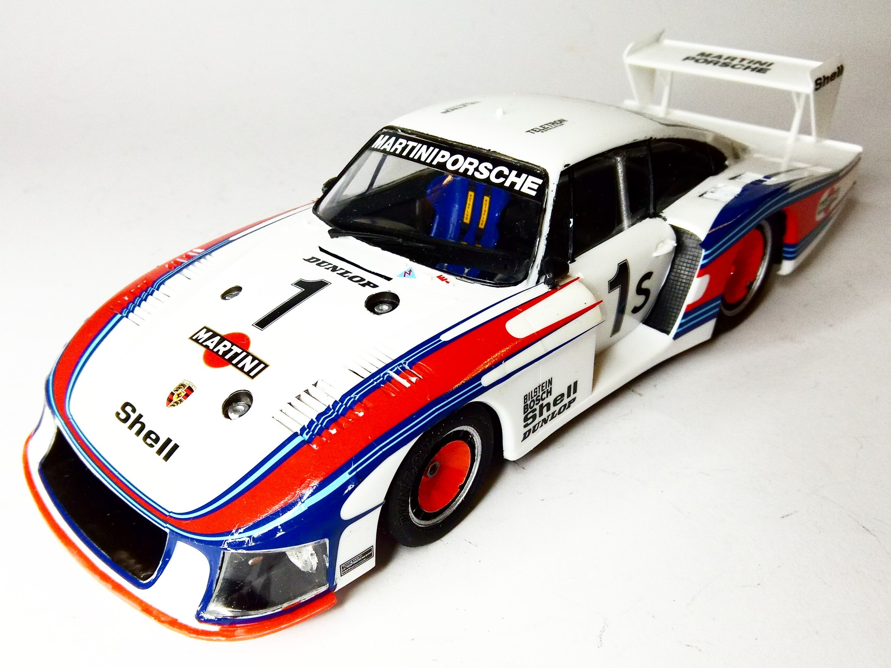
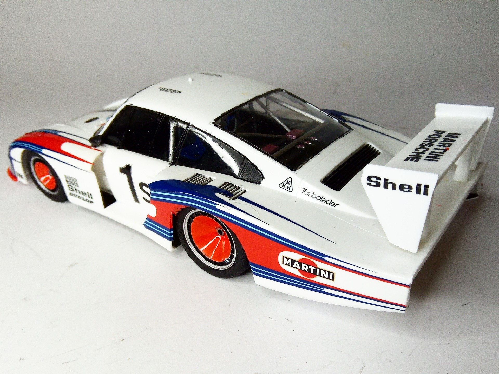

Auto e veicoli stradali · scale model archive
Porsche 936-78
Porsche 936-78 — Kit: Tamiya, Scale: 1/24. Gorgeour aerodynamic devlopment of the Porsche 935, LeMans 1978 #1/24 #Tamiya #Porsche #936-78

Photo gallery

English description
Gorgeour aerodynamic devlopment of the Porsche 935, LeMans 1978
#1/24 #Tamiya #Porsche #936-78
Descrizione italiana
Splendido sviluppo aerodinamico della Porsche 935, Le Mans 1978.